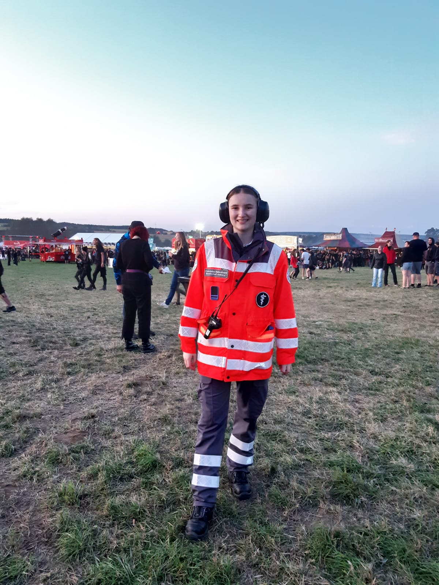
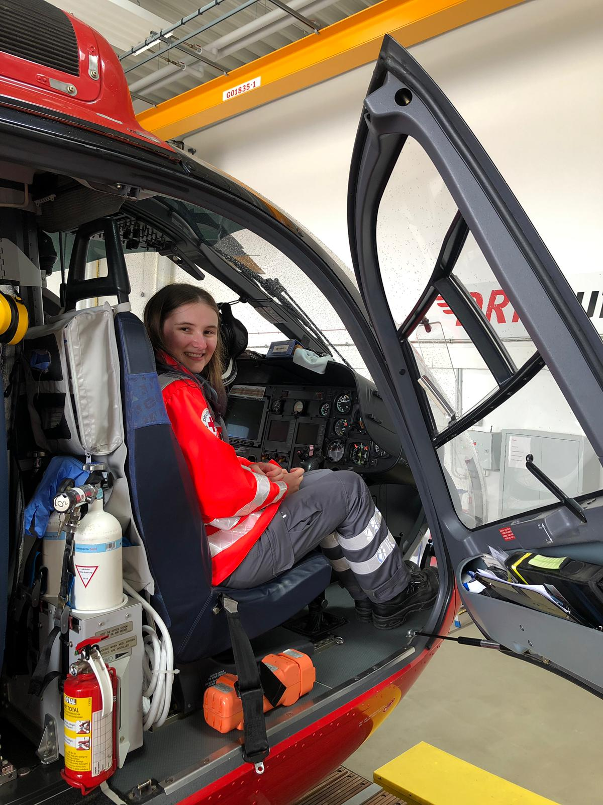

Menschen in Notlagen zu helfen ist der gemeinsame Ansporn der beiden BRK Bereitschaften Amberg. Mit mehr als 120 aktiven und passiven Einsatzkräften und Mitgliedern sorgen wir für sanitätsdienstliche Absicherungen bei Veranstaltungen, Unterstützung im Rettungsdienst und sind ein wichtiger Bestandteil des Katastrophenschutzes in der Stadt Amberg und im Landkreis Amberg-Sulzbach. Auf unserer Internetseite finden Sie aktuelle Neuigkeiten und Informationen zur BRK Bereitschaft Amberg 1, zur BRK Bereitschaft Amberg 2 sowie zum Ehrenamt beim Bayerischen Roten Kreuz.
 